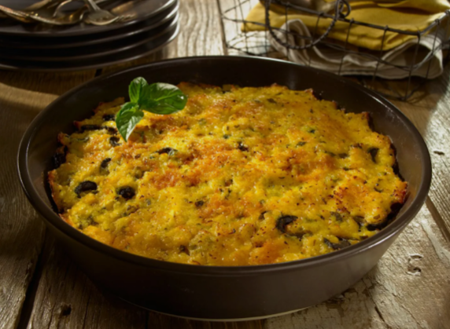

Somos un restaurante enfocado en rescatar los sabores tradicionales de la gastronomía chilena,
entregando una experiencia culinaria auténtica a cada uno de nuestros visitantes.
Nuestro objetivo es ofrecer platos típicos preparados con ingredientes frescos, recetas tradicionales
y una atención cercana, resaltando la identidad gastronómica de Chile.
Platos
Plato
Descripción
Precio
Empanada
Carne, cebolla y especias
$2.500
Pastel de choclo
Preparación tradicional chilena
$6.500
Cazuela
Sopa con verduras y carne
$5.800
Bebidas
Bebida
Descripción
Precio
Mote con huesillo
Bebida tradicional chilena
$3.000
Terremoto
Bebida típica chilena
$5.000
Jugo natural
Frutas frescas
$4.000
Postres
Postre
Descripción
Precio
Leche asada
Postre casero
$3.500
Torta mil hojas
Capas de masa con manjar
$6.000
Suspiro limeño
Dulce tradicional de textura cremosa
$5.000
Especialidades de la casa
Curanto
Preparación tradicional con mariscos y carnes. Precio: $12.000
Asado al palo
Carne cocinada lentamente al fuego, resaltando su sabor y textura. Precio: $10.500
Promociones
10% de descuento en platos seleccionados.
Bebida gratis en menú ejecutivo.
2x1 en postres los días miércoles.
Plato de la semana
El pastel de choclo es uno de los platos más representativos de Chile, combinando sabores
dulces y salados en una preparación tradicional muy valorada dentro de la cocina nacional.
Precio del plato de la semana: $6.500

Para complementar la información sobre este plato típico chileno,
también se puede revisar el siguiente recurso externo:
Ver información del pastel de choclo
Videos relacionados
En esta sección se incorpora un video de YouTube sobre la preparación de un plato típico chileno,
con el propósito de complementar la información gastronómica del restaurante.
Formulario de acceso
Este formulario permite que un usuario ya registrado pueda ingresar a la página mediante su nombre
de usuario y contraseña.
Formulario de registro de nuevos usuarios
Este formulario permite registrar nuevos clientes solicitando información personal básica,
utilizando distintos tipos de campos según la naturaleza del dato requerido.